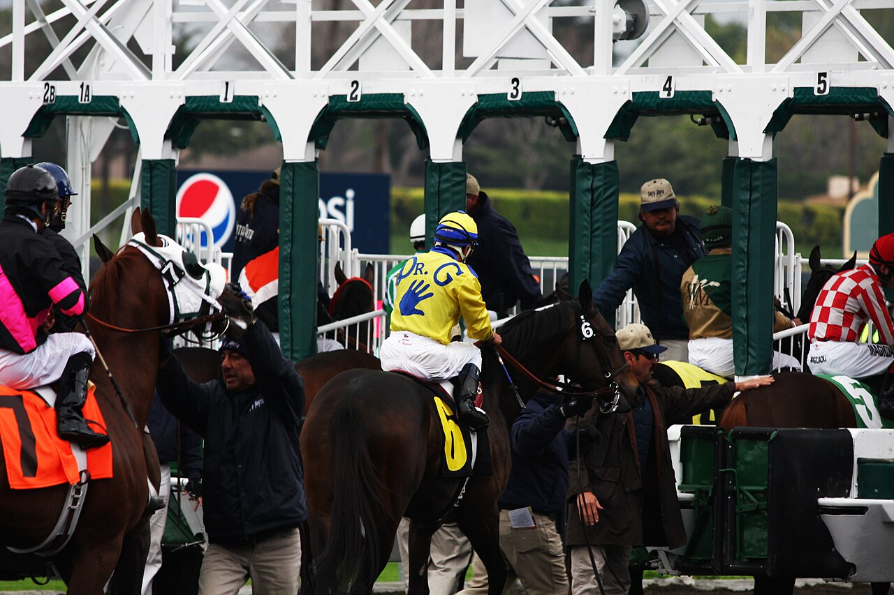

Las mejores potrancas de tres años se citan en el Kentucky Oaks de Churchill Downs
La prestigiosa carrera para yeguas se disputa el viernes en Louisville con un plantel de máximo nivel. Varias contendientes llegan invictas tras sobresalir en las preparatorias mientras Todd Pletcher busca ampliar su dominio histórico.

CC BY 2.0 · ver original
El Kentucky Oaks vuelve a concentrar la atención del turf norteamericano en la jornada previa al Derby de Kentucky. Churchill Downs acogerá el viernes una de las pruebas más relevantes para yeguas de tres años, con un cartel que promete emociones fuertes desde el momento de la partida. Varias de las participantes llegan invictas en la presente temporada tras lucirse en las carreras clasificatorias que sirven de trampolín hacia esta cita de Grupo I, consolidándose como las grandes favoritas para el triunfo.
El preparador Todd Pletcher intentará prolongar su racha ganadora en una prueba que ha conquistado en múltiples ocasiones a lo largo de su brillante trayectoria. El entrenador neoyorquino confía en repetir éxito con alguna de sus representantes, mientras que desde California llega una seria amenaza procedente de la cuadra de Bob Baffert, eterno rival en las grandes citas primaverales. La rivalidad entre ambos preparadores añade un aliciente extra a una carrera que, por tradición y dotación económica, figura entre las más codiciadas del calendario hípico estadounidense para su categoría.
El Kentucky Oaks se disputa desde 1875 y forma parte indiscutible del imaginario del turf mundial. La prueba, que antecede en un día al célebre Derby de Kentucky, sirve como escaparate para las mejores generaciones de potrancas del país y ha servido de trampolín para futuras campeonas que prolongaron su dominio en distancias clásicas. La expectación crece en Louisville a pocas horas del disparo de salida en Churchill Downs.